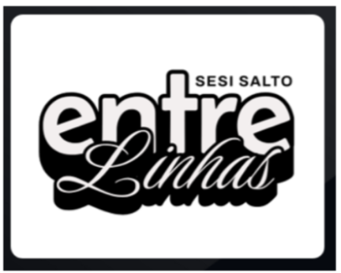

Conhecimentos - 3º Ano SESI Salto
Aqui você encontra registros de aprendizados, projetos e conquistas do nosso 3º Ano do SESI Salto.
Confira alguns dos nossos melhores momentos de aprendizado!

Ida a TOTVS
Competências e Habilidades Desenvolvidas:
- Cognição: Resolução de problemas, pensamento crítico e criatividade.
- Interpessoal: Trabalho em equipe, comunicação e colaboração.
- Intrapessoal: Autonomia, autoconhecimento e responsabilidade.
- Cidadania Global: Compreensão do papel da tecnologia na sociedade e respeito à diversidade.

Desbrava ENEM: Simulado imersivo
Competências e Habilidades Desenvolvidas:
- Cognição: Gestão do tempo, interpretação de textos e raciocínio lógico.
- Interpessoal: Compartilhamento de estratégias e apoio mútuo.
- Intrapessoal: Controle emocional e autoconfiança.
- Cidadania Global: Respeito às regras e ética durante avaliações.
- Ambiente Escolar: Promove disciplina e espírito de superação coletiva.

Aulão Enem: Aula de redação
Competências e Habilidades Desenvolvidas:
- Cognição: Argumentação, escrita e análise crítica.
- Interpessoal: Troca de ideias e respeito à opinião do outro.
- Intrapessoal: Expressão de sentimentos e autodesenvolvimento.
- Cidadania Global: Discussão de temas sociais e empatia.
- Ambiente Escolar: Incentiva o protagonismo e a participação ativa.
 (1) (1).png)
Festa Junina: Arraiá terceirão
Competências e Habilidades Desenvolvidas:
- Cognição: Planejamento e organização de eventos.
- Interpessoal: Cooperação, liderança e respeito às diferenças.
- Intrapessoal: Senso de pertencimento e autoestima.
- Cidadania Global: Valorização da cultura e tradição.
- Ambiente Escolar: Fortalece vínculos e promove integração entre turmas.

Copa Intersesi: Evento esportivo
Competências e Habilidades Desenvolvidas:
- Cognição: Estratégia, tomada de decisão e foco.
- Interpessoal: Trabalho em equipe, respeito e liderança.
- Intrapessoal: Resiliência, disciplina e autossuperação.
- Cidadania Global: Espírito esportivo e respeito às diferenças.
- Ambiente Escolar: Estimula a convivência saudável e o respeito mútuo.

Atividade Sensorial: Escrita de poemas
Competências e Habilidades Desenvolvidas:
- Cognição: Estímulo à criatividade, interpretação sensorial e expressão artística.
- Interpessoal: Compartilhamento de experiências, empatia e escuta ativa.
- Intrapessoal: Autoconhecimento, sensibilidade e desenvolvimento emocional.
- Cidadania Global: Valorização da diversidade de sentimentos e respeito às diferentes formas de expressão.
- Ambiente Escolar: Torna o ambiente mais acolhedor, incentivando a livre expressão e o respeito mútuo.

Roda de Leitura: "A Vida Não É Útil", de Airton Krenak
Competências e Habilidades Desenvolvidas:
- Cognição: Observação, análise crítica e interpretação de textos.
- Interpessoal: Troca de experiências, respeito mútuo e escuta ativa.
- Intrapessoal: Autonomia, autoconfiança e desenvolvimento do pensamento próprio.
- Cidadania Global: Consciência social, respeito à diversidade e empatia.
- Ambiente Escolar: Incentiva o protagonismo estudantil e o diálogo construtivo.

Roda de Leitura: "Olhos d'Água", de Conceição Evaristo
Competências e Habilidades Desenvolvidas:
- Cognição: Aplicação de conhecimentos teóricos.
- Interpessoal: Colaboração e empatia.
- Intrapessoal: Reflexão e autodesenvolvimento.
- Cidadania Global: Visão crítica sobre o mundo.
- Ambiente Escolar: Aproxima teoria e prática, tornando o aprendizado mais significativo.

Momentos Terceirão
Competências e Habilidades Desenvolvidas:
- Cognição: Pesquisa e investigação.
- Interpessoal: Compartilhamento de descobertas.
- Intrapessoal: Motivação para aprender.
- Cidadania Global: Respeito à diversidade cultural e social.
- Ambiente Escolar: Estimula a curiosidade e o engajamento dos alunos.

Jornal Escolar
Competências e Habilidades Desenvolvidas:
- Cognição: Escrita, pesquisa e síntese de informações.
- Interpessoal: Colaboração e comunicação entre colegas.
- Intrapessoal: Organização e responsabilidade.
- Cidadania Global: Respeito à diversidade de opiniões.
- Ambiente Escolar: Incentiva protagonismo e participação ativa.

Roda de Leitura: Escribas
Competências e Habilidades Desenvolvidas:
- Cognição: Interpretação e análise crítica de textos.
- Interpessoal: Troca de ideias e respeito ao outro.
- Intrapessoal: Expressão de opiniões e autoconfiança.
- Cidadania Global: Valorização da diversidade cultural.
- Ambiente Escolar: Incentiva o diálogo e o protagonismo.
.jpeg)
Seminário de Obras da Lista Fuvest
Competências e Habilidades Desenvolvidas:
- Cognição: Leitura crítica, análise literária e argumentação oral.
- Interpessoal: Trabalho colaborativo e desenvolvimento da oratória.
- Intrapessoal: Superação de desafios e construção de autoconfiança.
- Cidadania Global: Discussão de contextos históricos e sociais das obras.
- Ambiente Escolar: Estimula a pesquisa, o debate e a participação ativa.